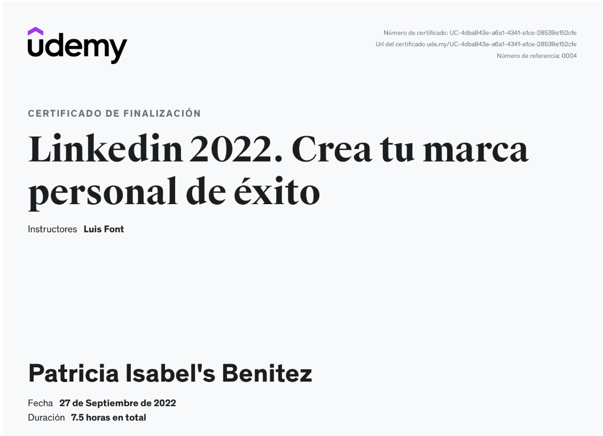

Isabel Benítez Ramos
Ingeniera bioquímica, analista de datos y docente con experiencia en diversas áreas, incluyendo laboratorios clínicos, control de calidad, análisis de datos en el sector médico y supervisión ambiental. Es apasionada del café, los paisajes y disfruto entrenar boxeo .
Habilidades
Habilidades tecnológicas
* Creación de tableros Power BI (uso de DAX).
* SQL: Bases de datos y consultas queries.
* MongoDB: Bases de datos y consultas queries.
* Python.
Habilidades analíticas
* Análisis de datos.
* Visualización de datos.
* Modelos de datos.
* Análisis predictivos.
Habilidades de comunicación
* Presentación de datos de manera comprensible y efectiva.
* Presentación de hallazgos.
* Redacción de informes técnicos.
Proyectos


Cursos e Insignias
Insignias Digitales
Click en la imagen para ver la insignia
Ciencia de datos con Python - Visualización

MongoDB- basico

Data analytics and Visualization Camp

Análisis de datos con pandas-python

Advanced DAX for Microsoft Power BI

Power BI y Business intelligence

Linkedin.Crea tú marca personal de éxito
Desarrollo personal

Otras areas
Laboratorio Clínico
* Análisis de muestras biológicas.
* Técnicas de bioquímica clínica.
* Procesamiento y validación de resultados.
* Control de calidad en laboratorio.
Bioquímica
* Métodos analíticos en bioquímica.
* Enzimología y cinética química.
* Metabolismo y vías bioquímicas.
* Evaluación de biomarcadores.
Geociencias
* Análisis de datos geoespaciales.
* Modelos de simulación ambiental.
* Geoquímica y caracterización de suelos.
* SIG (Sistemas de Información Geográfica).
Reconocimientos y Diplomas

congreso
AMIDIC
PRESENTACIÓN DE PROYECTO DONDE SE OTORGA EL 3 LUGAR EN PRESENTACIÓN DE CARTEL .

Reconocimiento
Congreso sustentabilidad
PRIMER LUGAR POR EL PROYECTO DE TESIS.

diploma
por beca de exelencia
POR EL PROMEDIO DE 9.9 EN LA MASTRIA.
Reconocimiento
Apoyo a ciencia de la tierra
LIDERARA PROYECTO PARA EL ENECUENTRO DE CIENCIAS DE LA TIERRA, ARTE Y HUMANIDADES.

Reconocimiento
Curso de fotonica
CURSO DE FOTONICA APLICADA.